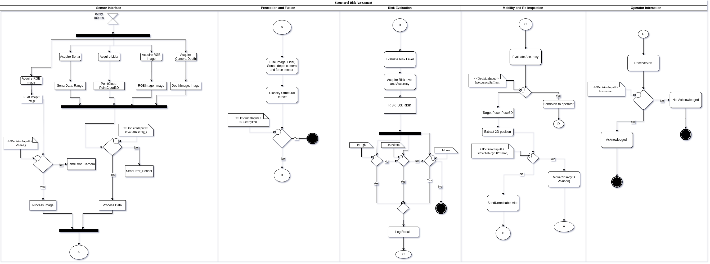

Structural Risk Assessment
{kind=link}
This document describes the detailed flow of the Structural Risk Assessment system, represented by the activity diagram. The diagram is organized into five main sections: Sensor Interface, Perception and Fusion, Risk Evaluation, Mobility and Re-Inspection, and Operator Interaction.
Each section is responsible for a set of operations crucial to detecting, evaluating, and responding to structural risks.
Diagram Overview
Sensor Interface
This section initiates every 100 ms and manages the acquisition of sensor data.
The system collects inputs from multiple sources:
Sonar (producing Range data)
Lidar (producing 3D Point Cloud data)
RGB Camera (producing RGB Images)
Depth Camera (producing Depth Images)
After acquisition, the system validates the RGB image using a decision point:
If the RGB Image is invalid, an error is sent via SendError_Camera.
If valid, the image is processed.
Simultaneously, the system checks if other sensor readings are valid:
If invalid, an error is sent via SendError_Sensor.
If valid, the sensor data is processed.
Once processing is complete, the system proceeds to the next section.
Perception and Fusion
In this phase, sensor data (images, Lidar, Sonar, depth camera, and force sensor) are fused together.
The system then classifies structural defects based on the fused data.
A decision is made:
If classification fails (isClassifyFail), the process terminates.
If classification succeeds, the system advances to risk evaluation.
Risk Evaluation
The system evaluates the risk level associated with the classified structural defect.
Risk level and accuracy are acquired and stored in RISK_DS.
Based on the evaluated risk, the system categorizes the defect into one of three levels:
High Risk
Medium Risk
Low Risk
Each decision path ensures proper logging or alerts as necessary, followed by a transition to mobility operations.
Mobility and Re-Inspection
This section evaluates the accuracy of the risk evaluation.
A decision point checks whether the current accuracy is sufficient:
If sufficient, an alert is sent to the operator.
If insufficient, the system extracts a 2D Position from the 3D pose.
It then assesses the reachability of the target:
If unreachable, an alert is sent to inform the operator.
If reachable, the system commands a MoveCloser(2D Position) action for better data collection and re-inspection.
Operator Interaction
This section handles communication between the system and the human operator.
Upon sending an alert, the system waits for operator acknowledgment:
If the alert is received and acknowledged, the system logs the acknowledgment.
If not acknowledged, the system records it as “Not Acknowledged” and ends the current interaction flow.
Key Performance Indicators (KPIs) for the system:
KPI |
Metric |
Success Criteria |
|---|---|---|
|
% of correctly identified cracks in a dataset |
>90% precision/recall on test images |
|
Correct risk level (e.g., low/medium/high) assigned |
>85% accuracy on labeled structural risks |
|
Mean depth variance in crack regions |
Low variance = possible instability |
|
Logical consistency of fused input (e.g., cracks + stress reading = high risk) |
Sensor fusion increases classification confidence |
|
Time from image acquisition to risk alert |
< 500ms in real-time ROS environment |
|
% of correctly triggered “move closer” decisions for unclear structures |
>90% of low-confidence cases result in correct proximity behavior |
|
% of structural risk alerts published correctly |
100% of critical cases result in a published alert |
Code
The full workflow enables:
Continuous data acquisition from multiple sensors.
Fusion of sensory information for accurate structural defect detection.
Risk evaluation with different severity levels.
Dynamic mobility actions to enhance inspection quality.
Real-time interaction with human operators to ensure timely decision-making.
This systematic, cyclic approach ensures robustness, reliability, and safety in structural risk assessment scenarios.
Structural Risk Dummy Node.
This script defines a dummy structural risk assessment node in ROS that simulates the detection of cracks, wall anomalies, hollow spaces, and force magnitudes. It publishes risk alerts based on synthetic data and responds to manual reassessment requests.
- class scripts.structural_risk_assessment.StructuralRiskDummy[source]
Bases:
objectA dummy class for simulating structural risk assessment.
This class subscribes to various sensor topics, generates dummy detections, evaluates a risk score based on these detections, and publishes a risk report.
- crack_count
Dummy crack count detected from RGB images.
- current_pose
Current robot pose from odometry.
- evaluate_risk()[source]
Evaluates the current structural risk based on dummy detection values.
Computes a risk score and categorizes it into LOW, MEDIUM, or HIGH risk. Publishes a RiskReport message with detailed detection data and the computed risk status.
- force_magnitude
Magnitude of force detected from wrist sensor.
- hollow_spaces
Dummy hollow spaces detected from sonar readings.
- lidar_callback(msg)[source]
Callback for LiDAR scan topic.
Simulates the detection of wall anomalies by randomly generating a number between 0 and 2. Logs the number of detected anomalies and triggers risk evaluation.
- Parameters:
msg (sensor_msgs.msg.LaserScan) – Incoming LiDAR scan message.
- manual_request_callback(msg)[source]
Callback for manual reassessment requests.
Processes the manual command received (e.g., “reassess” command to trigger reassessment).
- Parameters:
msg (std_msgs.msg.String) – Incoming manual request message.
- move_pub
Publisher for sending movement goals to navigate closer for reassessment.
- odom_callback(msg)[source]
Callback for odometry topic.
Stores the current pose of the robot for future navigation tasks (e.g., moving closer to inspect).
- Parameters:
msg (nav_msgs.msg.Odometry) – Incoming odometry message.
- reassessment_pub
Publisher for notifying about reassessment status.
- rgb_callback(msg)[source]
Callback for RGB image topic.
Simulates the detection of cracks by randomly generating a number between 0 and 4. Logs the number of detected cracks and triggers risk evaluation.
- Parameters:
msg (sensor_msgs.msg.Image) – Incoming RGB image message.
- risk_pub
Publisher for broadcasting risk alerts using a custom RiskReport message.
- sonar_callback(msg)[source]
Callback for sonar range topic.
Simulates the detection of hollow spaces by randomly generating a number between 0 and 2. Logs the number of detected hollow spaces and triggers risk evaluation.
- Parameters:
msg (sensor_msgs.msg.Range) – Incoming sonar range message.
- trigger_reassessment()[source]
Triggers a dummy reassessment movement.
If the current pose is known, sends a goal 1 meter forward from the current position and notifies that the robot is moving for reassessment.
- wall_anomalies
Dummy wall anomalies detected from LiDAR scans.